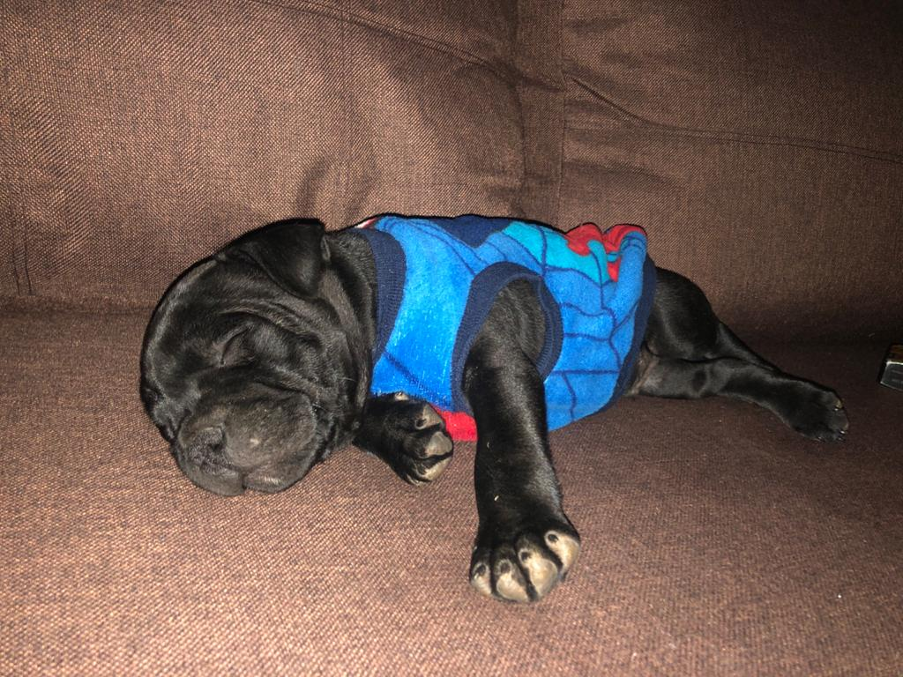

Kazumi

the realm is already up and running... the website will be ready in a little bit
I AM OVERLORD KAZUMI.... MASTER OF THE REALM... FEAR ME HOOMAN!!!

I am Bees... friend of Kazumi!
Game install instructions
- Download the zip file in the download section above
- Unzip the file
- Find the WoW.exe file... run it...eazy as that
Our Story begins
A band of 4 heros, Atineb, Jomoer, Chelly and Kripto.. set out in the world of Azeroth.
At first things seemed easy, the group went about the business of eliminating the threats
in the Abbey of Northshire without much hassle.
Marshal McBride then sent them to the forrest town of Elwynn, where our hero's quest would continue,
after speaking to the townsfolk and acquainting themselves with the town, our adventurers set out on their
first quest, to explore the mines of Fargo Deep... but little did they now...
once in the mines the party had a rough time of it. The local kobolds soon overwhelmed them...
After being beaten down, our heros in spirit form, went forth to try and retrieve their equipment,
but the kobolds thought it would be fun to play keep-away with our beaten adventurer's remains...
A good struggle later then group managed to collect their remains and regrouped at the Elwynn Forest tavern,
to try to come up with a new plan on how to deal with this ...uhm... situation....
to be continued....
The Fargo Deep mine
Back in the Tavern in Elwynn Forest, our heros were sitting at a table, and came up with a plan...
Basically ... Kill anything that moves. So they went about repairing and upgrading their equipment,
gathering supplies and such... Then set out to finish their task...
Jomoer, the gallant Paladin... took the plan to heart, a little to seriously..heh...nothing stood where he
passed, even cows and rabbits felt the bite of his sword, if anyone was ever in doubt of his where-abouts,
they only need follow the trail of dead bodies.
With new resolve the group entered the mine... and quickly dispatched of the Kobold menace. Soon they were set
back to the town to collect on the spoils of their victory!
For a little reprieve the members went about their own business, collecting data on new adventures to be had etc.
When friend Atineb, bless her warrior spirit, wandered too far of the beaten path and got lost in the Elwynn wildernes,
she foud her way back to the group though, and the little "adventure" was a nice source of amusement for the party.
A little rest, and fuddling about... and soon the group was of to the next quest... The Jasperlode Mine, and having learned
their lesson well in the previous mine, our heros made short work of dispatching the Kobolds in there... and some thugs along the way,
just for fun... they quickly finished up the quest and headed back to the town, for there were more spoils to be had, and more adventures
to come...
to be continued...